Sublime Text 3 是一款编辑器软件，自带语法高亮，代码提示，自动补全等让开发者爱不释手的功能。并且启动速度极快，支持自定义主题和安装第三方插件。不过刚下载的Sublime Text不仅图标巨丑，主题还难看，建议对其进行一番调教。调教包括配置主题，安装插件，了解快捷键和配置云同步等。
调教之前需要安装Package Control。使用快捷键Ctrl+Shift+P呼出Command Palette，然后输入install Package Control，然后Enter即可安装。官方Package Control市场：https://packagecontrol.io/。
安装主题
Sublime Text包含很多优秀的第三方主题，不过个人还是比较喜欢Boxy Theme。在Command Palette中输入install，选择Package Control: install Package：
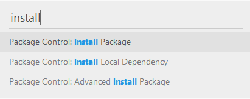
点击Enter呼出Package Control后输入Boxy Theme后点击Enter即可安装。控制台提示安装成功后，使用快捷键Ctrl+Shift+P呼出Command Palette，输入boxy，选择Boxy Theme:Activation即可在Boxy Theme自带的几款主题中进行切换：
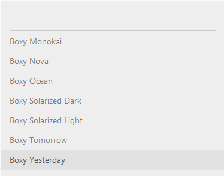
个人比较喜欢Yesterday这款主题：
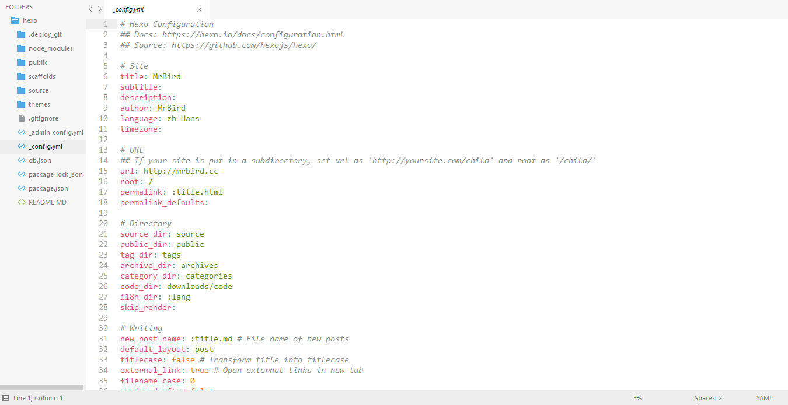
Yesterday相关配置（Preferences→settings）：
|
|
还可以安装与该主题配套的Mono File Icons插件，用于美化不同格式文件的图标样式。安装方法同上，不再赘述。效果如下：
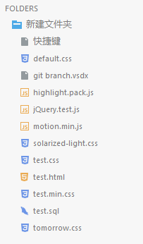
图标替换
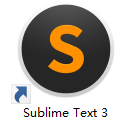
可以在Dribbble中搜索Sublime Text，然后下载喜欢的图标。不过大多数素材都是Mac的icns格式的，可以在https://iconverticons.com/online/网站中在线转换为windows中的ico格式。
安装插件
推荐几款常用的插件：
Autoprefixer
在编写CSS代码的时候，经常需要为了兼容不同内核的浏览器而在属性前编写-webkit-，-ms-,-moz-等前缀。使用这款插件可以替代我们自动完成这件事。 插件地址https://packagecontrol.io/packages/Autoprefixer。安装方式和主题的安装一致，不再赘述，下面插件将不再描述安装方法。
安装完成后，可以配置快捷键（Preferences→key Bindings）：
|
|
或者直接在Command Palette中输入auto，选择第一项：
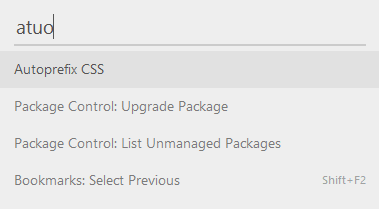
效果如下：
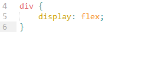
QuoteHTML
QuoteHTML可将HTML片段转换为字符串片段，在操作DOM的时候非常方便，省去了自己手动拼接的时间。
比如有如下HTML片段：
|
|
在Command Palette中输入q：
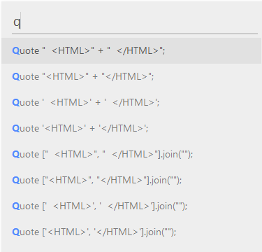
可根据实际需求自由选择，这里选择第二项然后敲击Enter，效果如下：
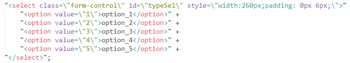
真是极其方便的说！也可以自己设置快捷键。
JsFormat
JsFormat插件可以将压缩后的JS代码格式化，默认绑定快捷键Ctrl+Alt+F,也可以自己设置快捷键：
|
|
或者在Command Palette中输入format：
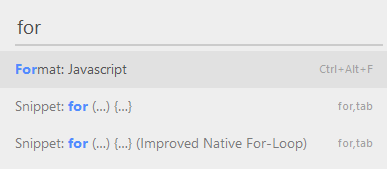
值得一提的是，它也可以格式化JSON数据。
CSSFormat
和JsFormat类似的是，CSSFormat用于格式化压缩后的CSS代码。安装完成后，右键选择CSS Format可看到对应的几个选项，不同选项格式化的样式不一样，可自行体验。
也可以在Command Palette中输入format css并按下Enter来格式化CSS代码：
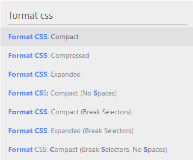
HTML-CSS-JS Prettify
HTML-CSS-JS Prettify是一款基于node.js的HTML/CSS/JS 代码美化插件。因为是基于node.js，所以安装前需要配置好node.js环境。
安装好后，需要在插件设置里配置本地node.js的安装路径，右键选择HTML/CSS/JS Prettify → Plugin Options - Default：
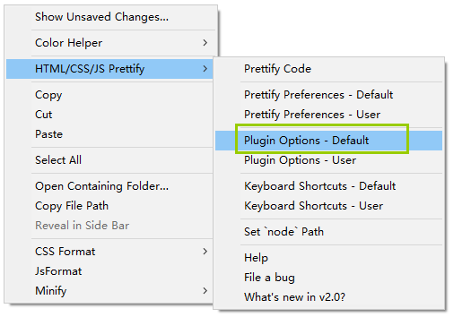
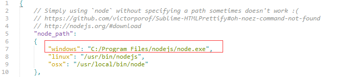
现有如下一段格式混乱的js代码：
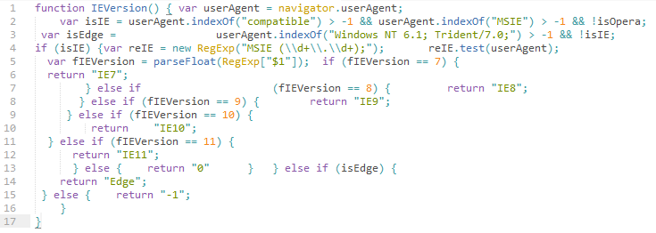
右键选择HTML/CSS/JS Prettify → Prettify Code：
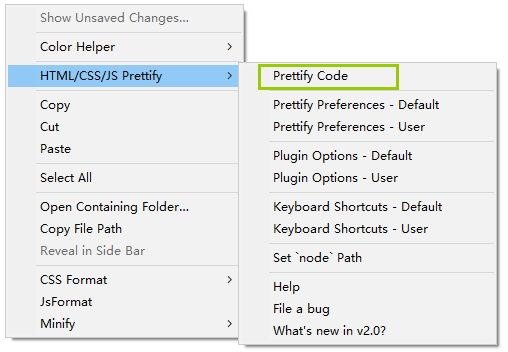
效果如下所示：
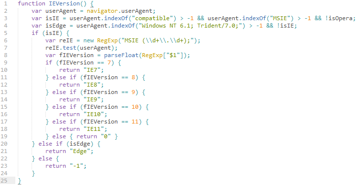
Minify
Minify是一款可以压缩Js，CSS，HTML，JSON，SVG等格式文件的插件。安装完插件后打开cmd输入下面命令安装：
|
|
如果你已经安装过其中的一些的话可以用下面命令更新：
|
|
然后右键中就有Minify的选项了：
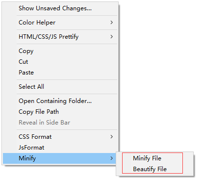
ColorHelper
ColorHelper提供CSS颜色预览，提供颜色转换，并允许在调色板中存储和访问喜爱的颜色。安装该插件后，CSS中颜色属性值前会出现一个相应颜色的小方块，如下图所示：
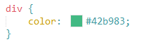
点击小方块，可以进行颜色格式的转换，如16进制转RGB,RGBA,HSL和HSLA：
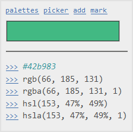
也可以在调色板中获取自己喜欢的颜色，并插入：
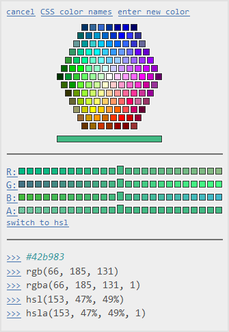
Better Completion
相比Sublime Text 3自带的代码补全功能，Better Completion可以提供更好自动补全功能，支持JavaScript，jQuery，Lodash，Underscore，HTML5，CSS3和Bootstrap等。安装完后在Command Palette输入sbc，然后按下Enter键：
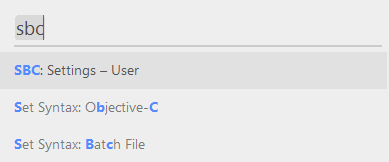
在弹出的文件中输入如下配置，并且将那些需要开启自动补全功能语言的选项后的false改为true：
|
|
jQuery自动补全的效果图如下：
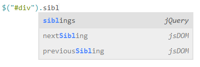
Modific
Modific突出显示行自上次提交以来的更改情况（支持Git，SVN等版本控制工具）。安装完后，如果在版本控制管理目录下修改了文件行，新增的部分以三角标显示，修改的部分以菱形显示，如下图所示：
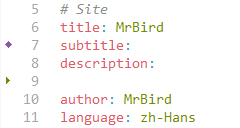
WakaTime
WakaTime插件用于在Dashboard中显示你这周的编程时间，编写代码种类占比等信息。安装完插件后，在Sublime Text编辑器下方会要求您输入密匙并按下Enter即可，密匙获取地址：https://wakatime.com/settings/account#apikey：
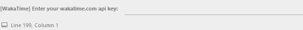
在编写一段时间后，就可以去https://wakatime.com/dashboard中查看你的编码情况啦：
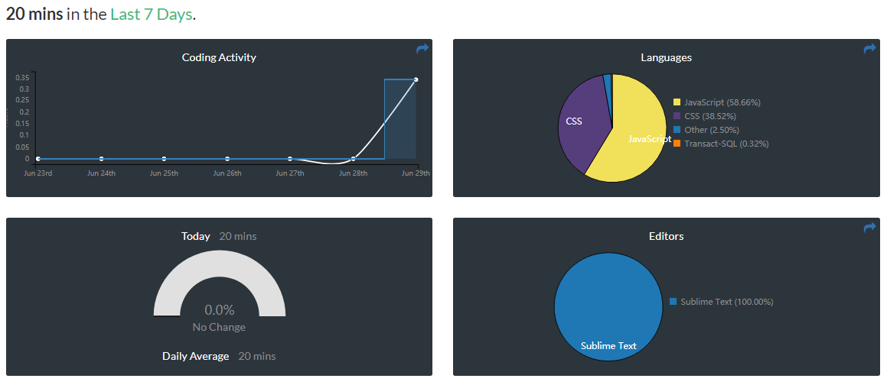
常用快捷键
这里只列出了Sublime Text在window中一些比较常用的自带快捷键：
|
|
在不同设备下同步个人配置
可以使用Git同步Packages/User/文件夹（可以在Preferences→Browse Packages…打开）下的内容，此文件夹包含Package Control.sublime-settings文件，其中包含所有已安装软件包的列表。使用Git同步到另一台机器，下次启动Sublime Text时，Package Control 将安装任何丢失的软件包的正确版本。
有些插件安装后需要重启Sublime Text才能生效。插件安装多了，可能引起快捷键的冲突，需要引起注意。